Moroccan Desk Lantern
AutoCAD drawing set with 3ds Max/Arnold renders, 2025
A fabrication-ready brass-and-glass desk lantern inspired by Moroccan metalwork. I modeled the full assembly in AutoCAD and produced a four-sheet drawing package with dimensions, sections, and joinery details. The render explores warm brass, glass, and the way the perforated band throws light.
360° Turntable
Drawing Set (Sheets 01–04)
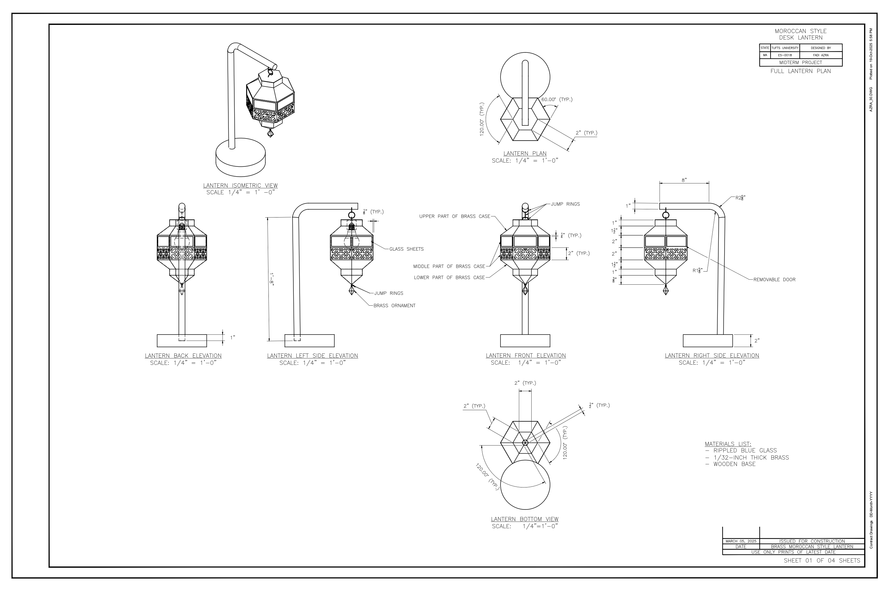
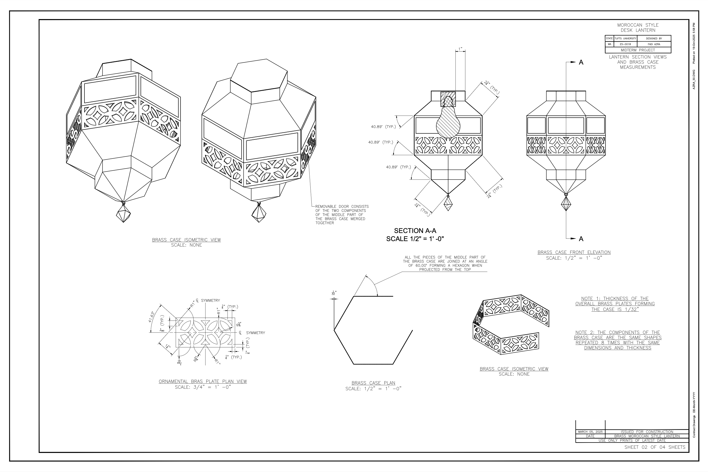
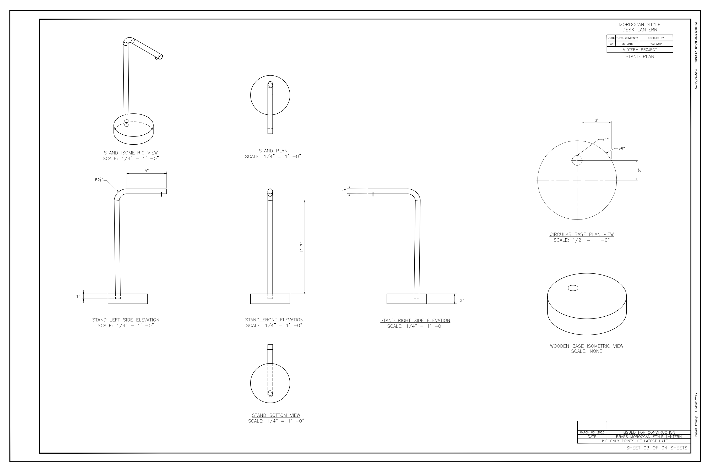
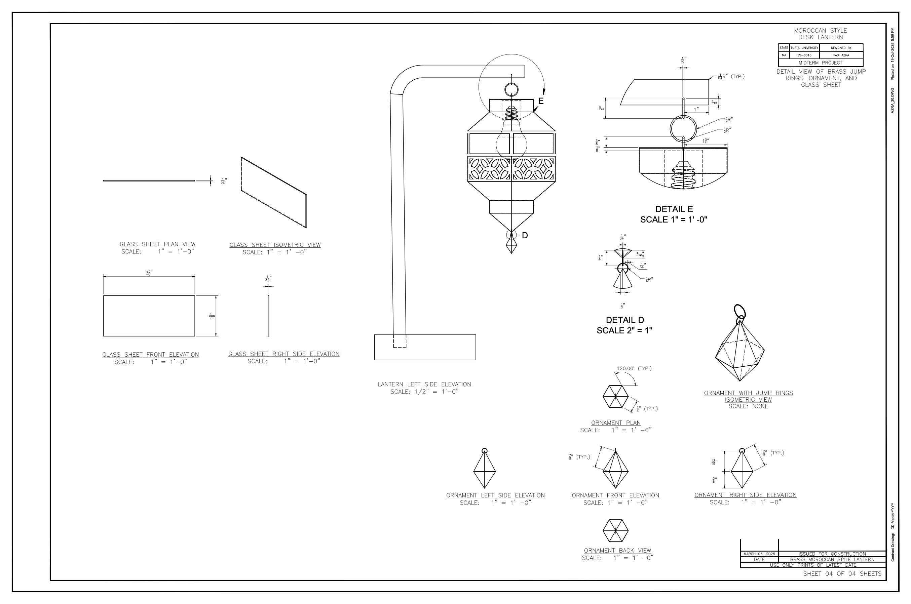
Featured Details
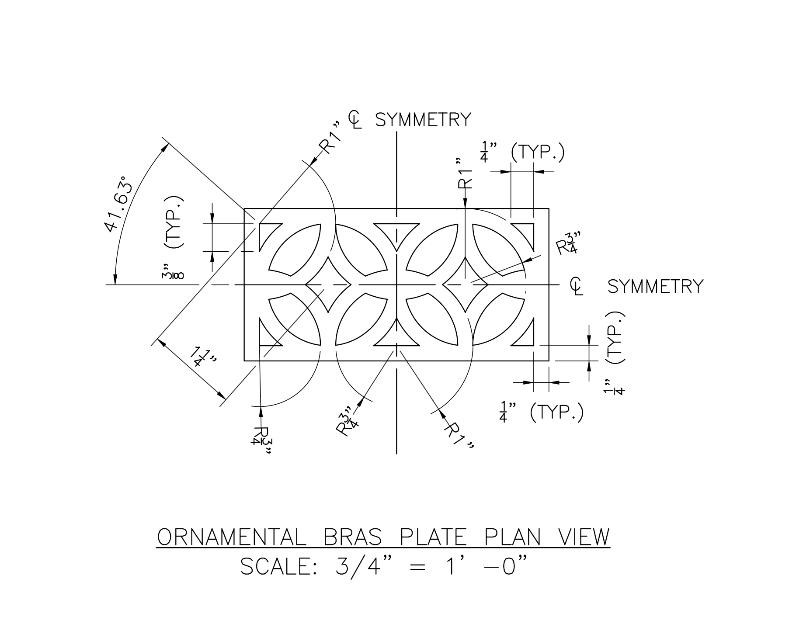
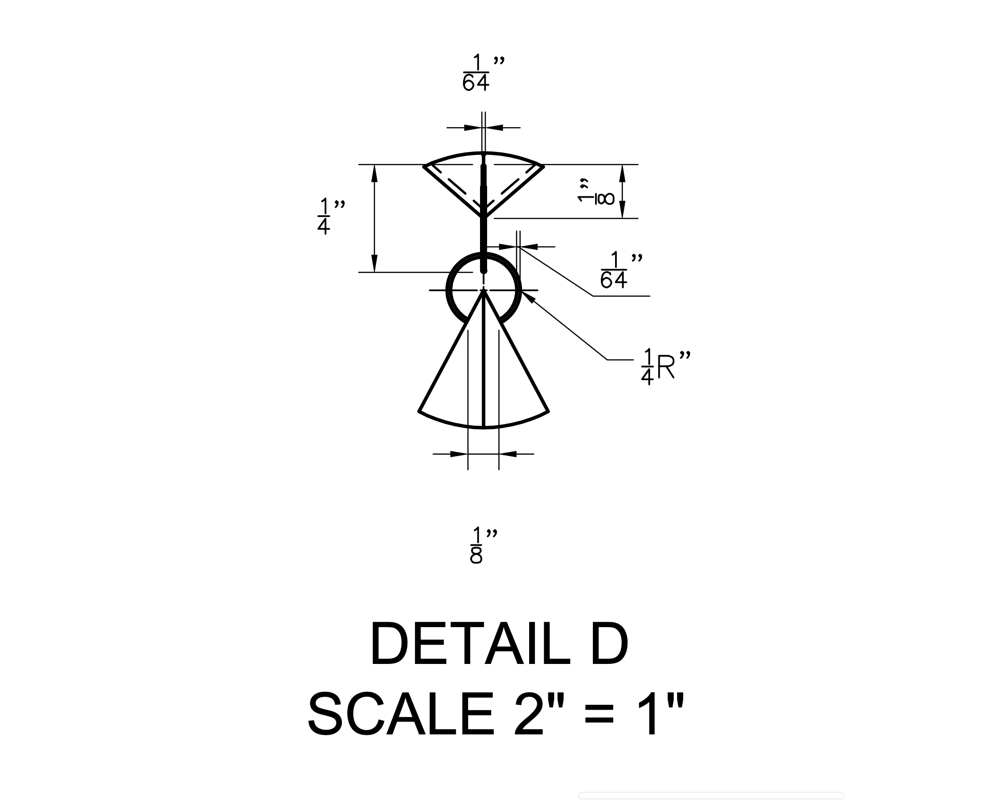
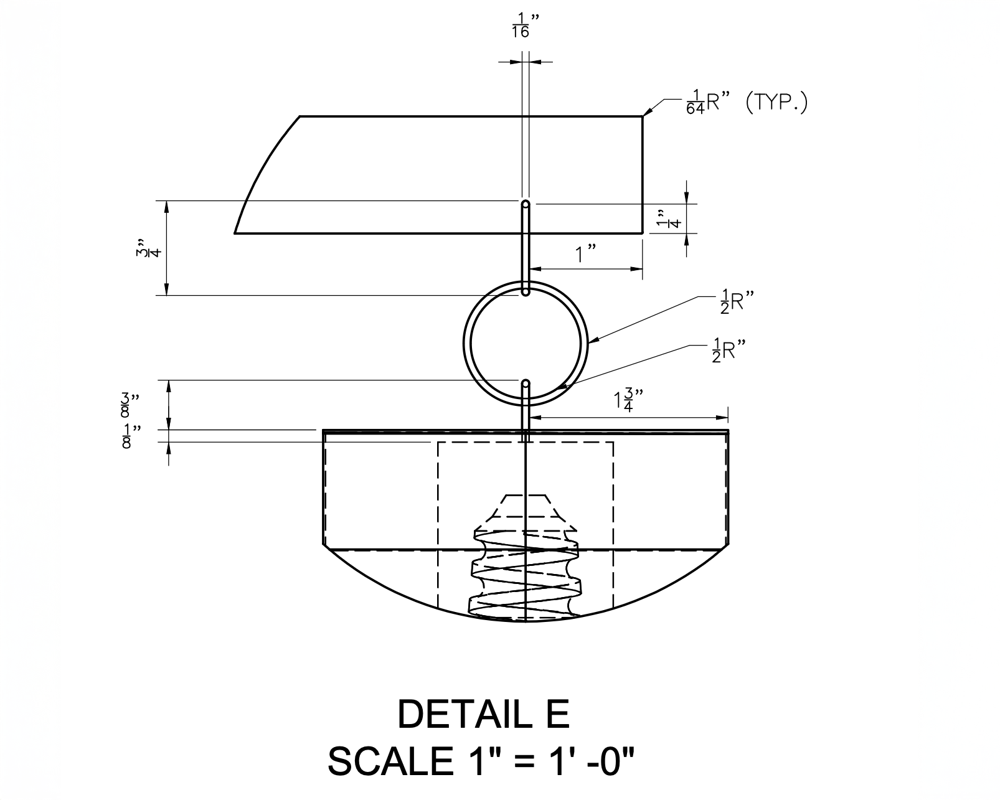
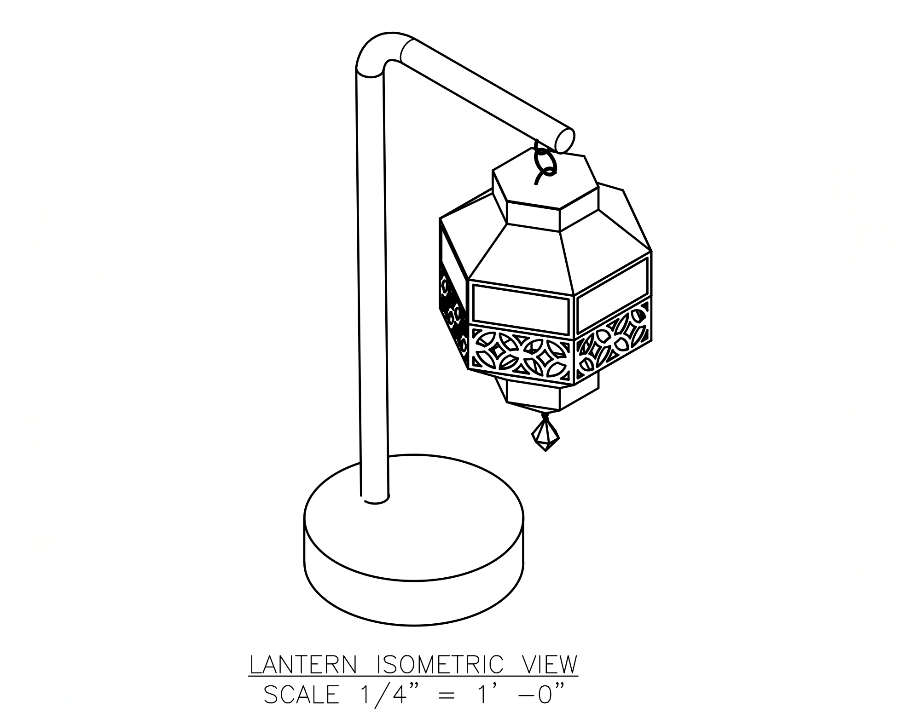
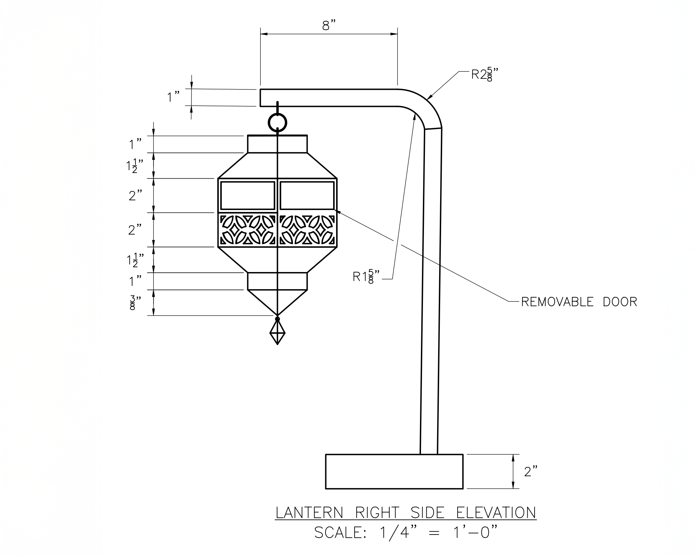
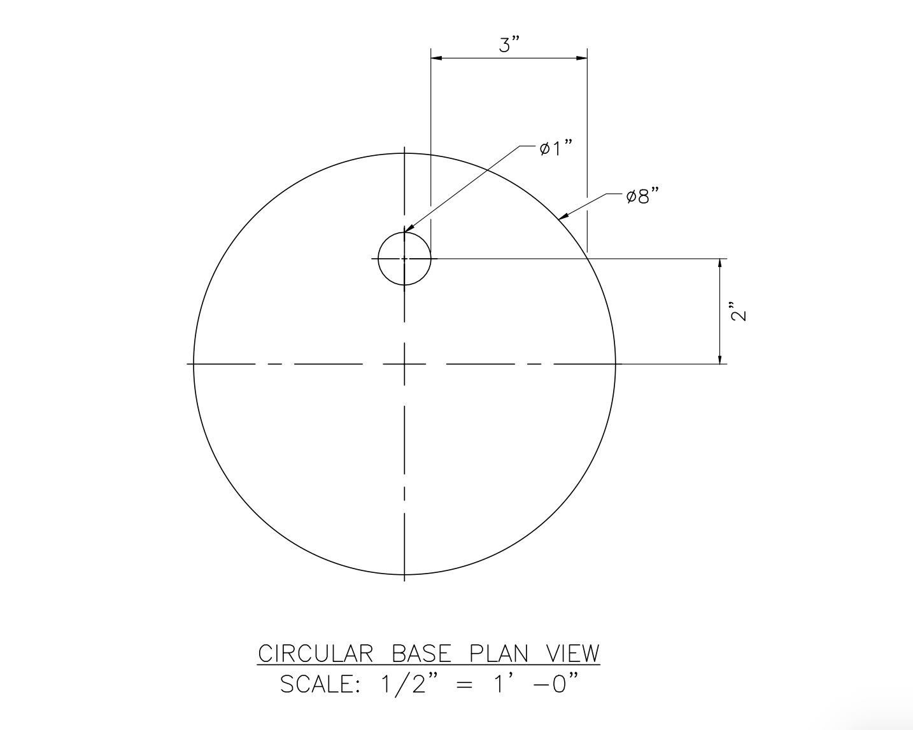
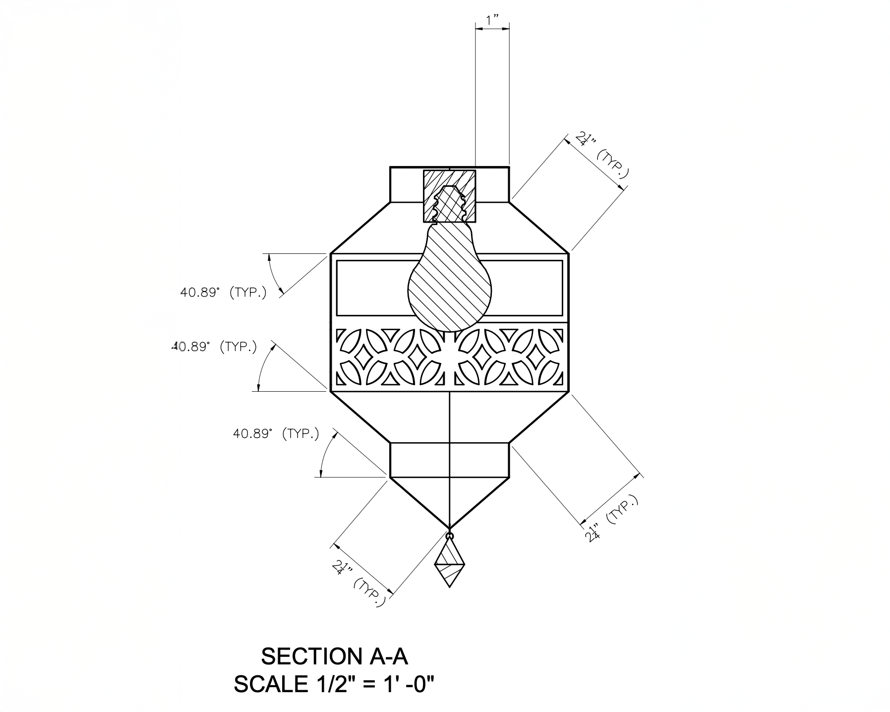
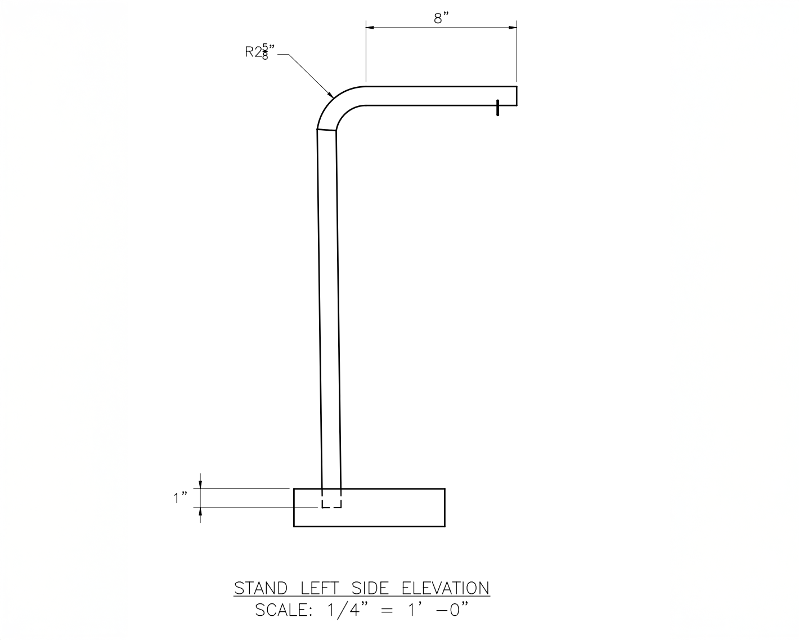
Notes & Fabrication Intent
Concept. Moroccan brasswork translated into a compact desk lantern. The body uses repeated modules to preserve a hexagonal plan while maintaining pattern continuity across a removable door.
Materials. 1/32″ brass plate, clear glass panes, stained wood base, standard bulb/socket hardware.
Assembly (overview). Cut & deburr brass → form facets & join per ring → fit door with clearance → seat glass panes (gasket/clips) → mount rod to base → hang body & route wiring → finish & polish.
Materials. 1/32″ brass plate, clear glass panes, stained wood base, standard bulb/socket hardware.
Assembly (overview). Cut & deburr brass → form facets & join per ring → fit door with clearance → seat glass panes (gasket/clips) → mount rod to base → hang body & route wiring → finish & polish.